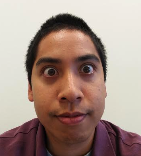

Danny Nguyen
About me
Hello, my name is Danny Nguyen and I'm a 27 year old male that has a pet dog named Sadie Hawkins Wong Nguyen. I recently moved to Culver City about 7 months ago and before that I was living in Orange County Irvine/Santa Ana/Fullerton for my whole life; however, I've been working in Downtown Los Angeles for almost three years. I studied biology with an emphasis in education at UC Irvine and worked for 2.5 years at a software procurement company before as a trainer and a business analyst.
In my free time, I enjoying playing tennis, basketball, hiking, and taking my dog to the dog park. Recently, I joined a USTA League to try to get more competitive in tennis since I haven't competed in high school.